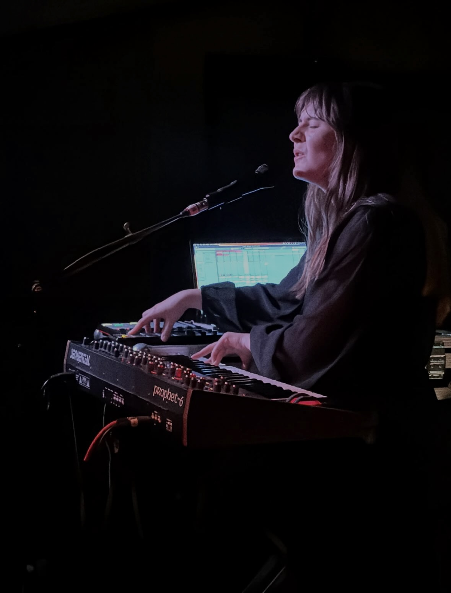

"Pellucid Polyphonic Pop with Multitracked Vocals Floating Over Misty Electronic and Acoustic Aural Cushions"
Ted Gioia (The 100 Best Recordings of 2025)
"Slow-burning, cinematic, and painterly, Desert Window is a magical, sophisticated lullaby of an album"
Alex Ruder (KEXP)
"multi-tracked vocals twirl and swirl like dandelion seeds…"
Shawn Reynaldo (First Floor's Favourite Tracks of 2025)
"a masterclass in atmospheric tension and release…"
Matt Young (The Line of Best Fit)
"an anticipatory flutter of soft electric guitar, choral harmonies…"
The Guardian (G2)
Interviews with Loud and Quiet, Roland, Talkhouse (Paul Haslinger), 3RRR
